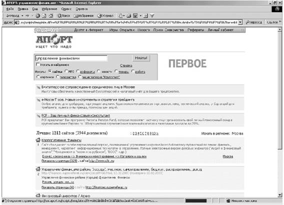

Лабораторная работа 10
Тема: РАБОТА С ПРОГРАММАМИ MS OUTLOOK, MS INTERNET EXPLORER
ЭЛЕКТРОННАЯ ПОЧТА. ПОЧТОВАЯ ПРОГРАММА MS OUTLOOK EXPRESS
Цель занятия. Изучение информационной технологии работы с почтовой программой MS Outlook Express.
Задание 10.1. Изучение интерфейса программы MS Outlook Express.
Порядок работы
1. Запустите MS Outlook Express (при стандартной установке программы выполните Пуск/Программы/MS Outlook Express). Если компьютер не подключен к Интернету, то при запуске сначала будет предложено установить соединение с организацией, предоставляющей доступ к сети Интернет. Выберите режим автономной работы, поскольку для подготовки почтовых отправлений не обязательно находиться в сети Интернет.
Краткая справка. Слева на экране находится список папок почтовой программы, которые предназначаются для хранения электронных писем, точно так же, как папки на диске - для хранения файлов. Самая верхняя папка называется «Входящие» и содержит письма, которые вы получаете по электронной почте. В папку «Исходящие» временно «складируются» письма, которые уже написаны, но еще не отправлены в Интернет. Папка «Отправленные» будет содержать копии уже отосланных в Интернет писем.
Справа от папок окно разделено на две части. Верхняя будет содержать список писем, которые «лежат» в одной из папок, в той, на которой пользователь перед этим щелкнул мышкой и которая выделяется синей или серой подсветкой. Нижняя часть окна предназначена для отображения текста письма.
2. Изучите интерфейс программы. Элементами главного окна Outlook Express являются Главное меню, Панель инструментов с кнопками пиктографического меню, Строка состояния (рис 10.1).
3. Проверьте правильность настроек почтовой программы (Сервис/Учетные записи).
Рис. 10.1. Интерфейс программы Outlook Express
4. Очистите папку «Удаленные» командой контекстного меню Очистить папку «Удаленные» (контекстное меню вызывается правой кнопкой мыши).
Краткая справк а. Папка «Удаленные» это «встроенная» мусорная корзинка: когда вы удаляете какое-либо письмо из любой другой папки, то оно попадает в папку «Удаленные», и его всегда можно снова вызвать оттуда, если оно вдруг понадобится.
Задание 10.2. Создать электронное письмо - «Приглашение на праздник» (юбилей вашей фирмы) в программе MS Outlook Express.
Порядок работы
1. Щелкните мышкой в верхнем левом углу почтовой программы справа от кнопки с надписью «Создать сообщение», выберите шаблон «Приглашение на праздник». Поверх окна почтовой программы раскрывается новое окно для написания приглашения (рис 10.2).
В верхней половине окна письма заготовлено четыре строки «Кому», «Копия», «Скрытая» и «Тема».
2. В поле Кому введите электронный почтовый адрес того, кому будет отправлено письмо (предположим, адрес своего почтового ящика). Если у вас нет своего почтового ящика, то можно набрать абстрактный адрес, например ASSSSK@mtu-net.ru (записывайте его слитно, без пробелов).
Если потребуется, можно ввести и несколько адресов, записывая их через точку с запятой в поле Кому, или набрать второй адрес в поле Копия, тогда каждому из указанных адресов будет автоматически отправлена копия письма.
Если указать адрес в поле Скрытая, то получатель не будет знать что кому-то еще высланы такие копии.
В поле Тема принято записывать короткую строчку, которая отражает смысл письма, например «Письмо-приглашение».
3. После того, как все поля адресации заполнены, щелкните мышкой в нижней части окна письма, чтобы там проявился текстовый курсор мигающая вертикальная черточка. Наберите текст извещения место встречи, время.
4. Щелкните мышью по кнопке с надписью «Отправить» окно закроется.
Краткая справка. Когда вы щелкнете на окне Отправить то подготовленное письмо попадает в папку «Исходящие» и будет находиться там в ожидании. И только тогда, когда все письма будут готовы к отсылке, щелкните мышью по кнопке с надписью «Доставить почту».
Рис. 10.2. Окно для создания электронного письма «Приглашение
на праздник
Задание 10.3. Создать электронное письмо «Поздравление с днем рождения», используя шаблон оформления в программе MS Outlook Express.
Порядок действий аналогичен Заданию.
Задание 10.4. Создать информационное электронное письмо с вложенным файлом
Порядок работы
1. Щелкните мышкой по кнопке с надписью «Создать сообщение».
2. В поле Кому введите электронный почтовый адрес
ASSSSK@mtu-net.ru.
3. В поле Тема наберите «Информационное письмо».
4. Введите текст письма (рис. 10.3): «Приглашаем Вас принять участие в семинаре. Более подробная информация прилагается».
Краткая справка. Вставка файла в сообщение производится следующим образом. Щелкните по любому месту в окне создаваемого сообщения. В меню Вставка выберите «Вложение файла». Выберите файл и нажмите кнопку Вложить. Имя вложенного файла появится в поле Присоединить, находящемся в заголовке сообщения. В сообщение можно добавлять текстовые файлы (файлы с расширением *.txt), выбрав в меню Вставка пункт «Текст из файла».
5. Вложите файл рекламного письма, созданного в Задании (Вставка/Вложение файла или кнопка Вложить файл в виде скрепки). Обратите внимание, что появилась новая строка «При соединить» с именем вложенного файла (см. рис 10.3).
6. Щелкните мышью по кнопке с надписью Отправить окно закроется.
Рис. 10.3. Информационное письмо с вложенным файлом
Задание 10.5. Создать электронное письмо из текстового редактора MS Word на основании документа, созданного в Задании 1.1 - «Приглашение».
Порядок работы
1. Откройте файл текстового документа «Приглашение», созданного в Задании 1.1.
2. Щелкните мышкой по кнопке с надписью «Сообщение» в панели инструментов.
3. В открывшейся адресной части электронного письма введите электронный адрес и тему (рис 10.4).
4. Нажмите кнопку «Отправить копию».
Рис. 10.4. Создание электронного письма из текстового редактора
Задание 10.6. Отправить все созданные электронные письма на почтовый сервер.
Порядок работы
1. Щелкните мышью по кнопке с надписью «Доставить почту».
Если вы работаете в автономном режиме, то появится окно с предложение подключиться к сети. Нажмите кнопку Да для подключения (рис 10.5).
2. Если в качестве адреса получателя вы использовали свой почтовый ящик, то произойдет отправка писем вам же.

Рис. 10.5. Запрос на подключение к сети
Процессы отправки и получения писем индицируются динамическим индикатором синей полоской, постепенно удлиняющейся слева направо в особом окне, выводимой программой во время пересылки.
Краткая справка. При нажатии кнопки Доставить почту сначала все письма, накопленные в папке «Исходящие», программа автоматически перешлет на почтовый сервер, и оттуда они будут разосланы по указанным адресам. Потом все письма, которые были накоплены на почтовом сервере для вас за все время, прошедшее с предыдущего сеанса связи, программа, также автоматически, перешлет с почтового сервера на ваш компьютер и поместит в папке «Входящие». Причем (так задано в настройках Outlook Express) выделит еще не прочитанные письма в списке и название папки жирным шрифтом, а справа от названия папки будет указано их количество.
3. Как только письма получены, связь с Интернетом можно Разъединить.
Дополнительные задания
Задание 10.7. Создать информационное электронное письмо с прикрепленным файлом рисунком.
Задание 10.8. Создать электронное письмо из текстового редактора MS Word на основании текстового документа, созданного в Задании 1.2.
Тема: НАСТРОЙКА БРАУЗЕРА MS INTERNET EXPLORER
Цель занятия. Изучение информационной технологии настройки браузера MS Internet Explorer
Задание 10.9. Изучение интерфейса программы Internet Explorer.
Порядок работы
1. Запустите Internet Explorer (при стандартной установке программы выполните Пуск/Программы/MS Internet Explorer). Если компьютер не подключен к Интернету, то при запуске сначала будет предложено установить соединение с организацией, предоставляющей доступ к сети Интернет. Для выполнения настроек программы не обязательно выполнять соединение можно работать в автономном режиме.
2. Изучите интерфейс программы. Элементами главного окна Internet Explorer являются Главное меню, Панель инструментов с кнопками пиктографического меню, Адресная строка, Строка состояния (рис 10.6).
Краткая справка. Кнопки со стрелками (Назад и Вперед) в левой части панели инструментов служат для передвижения назад и вперед, кнопка Обновить - для перезагрузки файла, Домой для возврата на стартовую, или домашнюю страницы, Поиск для поиска в Интернете, Избранное - для пометки понравившихся вам серверов, чтобы можно было быстро вернуться к ним. Кнопка Печать поможет распечатать документ.
3. Измените вид окна, используя меню Вид. Если панель инструментов не отображается, выберите пункт «Панель инструментов». Для получения справки воспользуйтесь меню Справка.
Рис. 10.6. Интерфейс программы Internet Explorer
Задание 10.10. Произвести настройку браузера по ускорению загрузки Web-страниц путем удаления файлов из папки с временными файлами.
Порядок работы
1. Откройте окно Свойство обозревателя командой Сервис Свойства обозревателя. Откройте вкладку Общие, в зоне «Временные файлы Интернета» нажмите на кнопку Удалить файлы, поскольку просматриваемые страницы копируются в особую папку (рис 10.7).
2. Дайте подтверждение на удаление файлов из папки временных файлов Интернета (рис 10.8).
Рис. 10.7. Удаление временных файлов
Рис. 10.8. Подтверждение удаления временных файлов
Задание 10.11. Произвести увеличение места на диске для временного хранения страниц.
Порядок работы
Откройте окно Свойство обозревателя командой Сервис/ Свойства обозревателя. Откройте вкладку Общие, в зоне «Временные файлы Интернета» нажмите на кнопку Настройка. В открывшемся окне Настройка переместите указатель вправо (рис 10.9).
Рис. 10.9. Увеличение места на диске для временного хранения страниц
Задание 10.12. Произвести настройку браузера по ускорению загрузки Web-страниц путем отключения загрузки мультимедийных объектов.
Порядок работы
Откройте окно Свойство обозревателя командой Сервис/ Свойства обозревателя. Откройте вкладку Дополнительно и снимите флажки позиций «Воспроизведение анимации, звука, видео, рисунков» (рис 10.10).
Рис. 10.10. Настройка режима загрузки Web-страниц
Задание 10.13. Произвести установку правильной кодировки Windows.
Рис. 10.11. Выбор кодировки «Кириллица Windows»
Порядок работы
В меню Вид выберите команду Вид кодировки и позицию «Кириллица Windows» (рис 10.11).
Задание 10.14. Произвести настройку уровня защиты
Порядок работы
Откройте окно Свойство обозревателя командой Сервис/ Свойства обозревателя. Откройте вкладку Безопасность, выберите уровень безопасности (рис 10.12).
Рис. 10.12. Выбор уровня безопасности
Задание 10.15. Произвести настройку уровня защиты по ограничению доступа к нежелательным материалам.
Порядок работы
Откройте окно Свойство обозревателя командой Сервис/ Свойства обозревателя. Откройте вкладку Содержание, в зоне «Ограничение доступа» нажмите на кнопку Включить. Выберите категорию для просмотра уровней оценок и установите, что разрешено просматривать (рис 10.13).
Рис. 10.13. Настройка уровня защиты по ограничению доступа
Задание 10.16. Произвести сохранение личных данных для Web узлов.
Порядок работы
Откройте окно Свойство обозревателя командой Сервис/ Свойства обозревателя. Откройте вкладку Содержание, в зоне «Личные данные» нажмите кнопку Профиль и выберите в адресной книге адрес для вашего профиля.
Задание 10.9. В папке «Избранное» создать свою папку с именем «Важные сведения».
Порядок работы
1. Нажмите на кнопку Избранное, далее Добавить. В появившемся окне Добавление в избранное нажмите на кнопку Создать папку(рис 10.14).
2. В открывшемся окне Создание новой папки наберите имя папки «Важные сведения» (рис 10.15).

Рис. 10.14. Окно «Добавление в избранное».
Рис. 10.15. Создание новой папки в папке «Избранное»
Дополнительные задания
Задание 10.17. Произвести изменение оформления.
Порядок работы
Откройте окно «Свойство обозревателя» командой Сервис/ Свойства обозревателя. Откройте вкладку Общие, воспользуйтесь кнопками Цвета, Шрифты, Оформление.
Задание 10.18. Просмотреть сертификаты безопасности.
Порядок работы
Откройте окно Свойство обозревателя командой Сервис/ Свойства обозревателя. Откройте вкладку Содержание, нажмите кнопки Сертификаты, Издатели.
Тема: ПОИСК ИНФОРМАЦИИ В ГЛОБАЛЬНОЙ СЕТИ ИНТЕРНЕТ
Цель занятия. Изучение информационной технологии организации поиска информации в сети Интернет.
Задание 10.19. Произвести поиск сайтов в наиболее популярных поисковых системах общего назначения в русскоязычном Интернете (Рунете).
Краткая справка. Наиболее популярными русскоязычными поисковыми системами являются:
Rambler - www.rambler.ru
Апорт - www.aport.ru
Яndex - www.yandex.ru
Англоязычные поисковые системы
Yahoo - www.yahoo.com
Специализированные поисковые системы позволяют искать информацию в специализированных слоях Интернета. К ним можно отнести поиск файлов на серверах FTP и систему поиска адресов электронной почты WoyWhere
Порядок работы
1. Запустите Internet Explorer. Если компьютер не подключен к Интернету, то при запуске сначала будет предложено установить соединение с организацией, предоставляющей доступ к сети Интернет. Выполните соединение.
Для перехода в определенное место или на определенную страницу воспользуйтесь адресной строкой главного окна Internet Explorer.
Краткая справка. Адрес узла (URL) обычно начинается с
имени протокола, за которым следует обслуживающая узел организация, например в адресе http://www.rambler.ru «http://www» указывает, что это сервер Web, который использует протокол http домен «.ru» определяет адрес российских узлов.
2. Произведите поиск в поисковой системе Rambler
Введите в адресную строку адрес (URL) русскоязычной поисковой системы Rambler www.rambler.ru и нажмите клавишу [Enter] (рис. 10.16). Подождите, пока загрузится страница. Обратите внимание на изображение вращающегося земного шара в правом верхнем углу экрана (это обозначает, что идет процесс загрузки. В это же время на панели инструментов активизируется красная кнопка Остановить, предназначенная для остановки загрузки
3. Рассмотрите загрузившуюся главную страницу вы видите поле для ввода ключевого слова и ряд рубрик. Для перехода на ссылки, имеющиеся на странице, подведите к ссылке курсор и щелкните левой кнопкой мыши. Ссылка может быть рисунком или текстом другого цвета (обычно с подчеркнутым шрифтом). Чтобы узнать, является ли элемент страницы ссылкой, подведите к нему указатель. Если указатель принимает вид руки с указательным пальцем, значит, элемент является ссылкой.
Рис. 10.16. Поисковая система Rambler www.rambler.ru
4. Введите в поле поиска словосочетание «Энциклопедия финансов» и нажмите кнопку Найти.
5. Убедитесь, что каталог Web работает достаточно быстро. Программа через некоторое время сообщит вам, что найдено определенное количество документов по этой тематике. Определите, сколько документов нашла поисковая система.
6. Запомните страницу из списка найденных, представляющую для вас интерес, командой Избранное/Добавить в папку.
7. Сохраните текущую страницу на компьютере. Выполните команду Файл/Сохранить как, выберите папку для сохранения, задайте имя файла и нажмите кнопку Сохранить
8. Для поиска информации на текущей странице выполните команду Правка/Найти на этой странице (или нажмите клавиши [Ctrl]-[F]). В окне поиска наберите искомое выражение, например «Финансы» (рис. 10.17), и нажмите кнопку Найти далее. Откройте страничку одной из найденных энциклопедий.
Рис. 10.17. Задание поиска на странице
9. Скопируйте сведения страницы в текстовый документ. Для копирования содержимого всей страницы выполните команду Правка/Выделить все и команду Правка/Копировать. Откройте новый документ текстового редактора MS Word и выполните команду Правка/Вставить.
Краткая справка. Невозможно копирование сведений с одной Web-страницы на другую.
10. Произведите поиск в поисковой системе Яndex. Откройте поисковый сервер Яndex www.yandex.ru. (рис. 10.18). В поле поиска задайте «Энциклопедии», нажмите кнопку Найти, сравните результаты с поиском в Рамблере.
Рис. 10.18. Поисковый сервер Яndex www.yandex.ru
11. Сузьте круг поиска и найдите информацию, например об управлении финансами (в поле поиска введите «Управление финансами. Сравните полученные результаты с предыдущим поиском
12. Введите одно слово «Финансы» в поле поиска. Отличается ли результат от предыдущего поиска? Попробуйте поставить перед поисковой системой задачу найти информацию о какой-нибудь конкретной валюте, предположим «Доллар». Сравните результаты поиска.

Рис. 10.19. Почтовый сервер Яndex «Почта»
Краткая справка. Не бойтесь повторять свой запрос на разных поисковых серверах. Зачастую один и тот же запрос на другом сервере дает совершенно иные результаты.
13. В окне Яndex нажмите на кнопку Моя почта (рис. 10.19). В открывшемся окне почтового сервера вы можете зарегистрировать себе почтовый ящик с адресом ваша_почта@yandex.ru такой адрес легко запоминается. Яndex предоставит в ваше распоряжение 10 Мбайт. Если у вас есть телефон, поддерживающий протокол WAP, вы можете читать свою почту без компьютера
14. Произведите поиск картинок и фотографий в поисковой системе Яndex. В поле поиска наберите по-английски «Dollar» и укажите категорию поиска «Картинки». Запрос «Dollar» найдет в Интернете картинки, в имени которых встречается слово «Dollar».
Высока вероятность того, что эти картинки связаны с финансами.
Задание 10.20. Произвести поиск в интернет-энциклопедии Кирилла и Мефодия.
Порядок работы
1. Введите в адресную строку адрес (URL) русскоязычной мегаэнциклопедии Кирилла и Мефодия www.mega.km.ru и нажмите клавишу [Enter] (рис10.20).
Рис. 10.20. Энциклопедия Кирилла и Мефодия
2. Найдите в энциклопедии сведения о финансовой ренте, для этого в поле поиска наберите словосочетание «Финансовая рента».
3. Скопируйте найденные сведения в текстовый документ. Для копирования содержимого всей страницы выполните команду Правка/Выделить все и команду Правка/Копировать. Откройте новый документ текстового редактора MS Word и выполните команду Правка/Вставить.
Задание 10.21. Произвести поиск по нескольким поисковым серверам.
Краткая справка. Мегапоисковый инструмент это программа, которая посылает ваш запрос сразу на несколько серверов а затем собирает наиболее вероятные источники необходимой вам информации на одной странице. Один из лучших поисковых инструментов в WWW сервер SAVVYSEARCH (в переводе с англ. Поиск здравого смысла) (http:/www.savvysearch.com Загрузите сервер SAVVYSEARCH (http:/www.savvysearch.com). Введите поисковый запрос «Dollar» на английском языке. Запуститепоиск, посмотрите результаты поиска.
Задание 10.22. В системе электронного поиска адресов электронной почты WHOWHERE (www.whowhere.lycos.com) найти своих однофамильцев.
Введите имя, фамилию и предполагаемый доме´н. Сформируйте список.
Задание 10.23. Произвеcти поиск файлов на серверах файлов архивов FTPSEARCH (www.ftpsearch.lycos.com). Найдите файл интерактивного общения ICQ (ICQ
Краткая справка. FTP File Transfer Protocol, или протокол передачи файлов, позволяет соединять между собой компьютеры и передавать файлы по сети с одного компьютера на другой.
Дополнительные задания
Задание 10.24. Произвести поиск («Управление финансами с помощью поисковой системы общего назначения Апорт www.aport.ru (рис 10.21).

Рис. 10.21. Поисковая система Апорт
Задание 10.25. Произвести поиск («Dollar») с помощью англоязычной поисковой системы Yahoo www.yahoo.com.
Задание 10.26. Посетить российский сервер бесплатных программ Freeware.ru (www.freeware.ru). Найти русифицированную версию программы интерактивного общения ICQ.